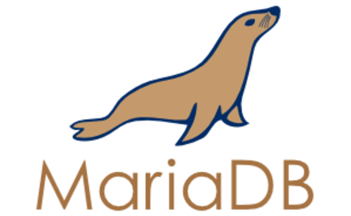

MARİADB VE MYSQL ARASINDAKİ FARKLAR
MySQL
 Bir (ilişkisel) veritabanı yönetim sistemidir.
Tüm verileri tek bir ambara yığmak yerine farklı tablolarda ve veritabanlarında düzenli bir biçimde saklar.
SQL adı verilen, veritabanlarına erişmek için kullanılan en yaygın ve standart dil ile işlemler yapıyor.
Çifte lisanslı bir yazılımdır. Hem Genel Kamu Lisansı'na (GPL) sahip özgür bir yazılım, hem de GPL'in kısıtladığı alanlarda kullanmak isteyenler için ayrı bir lisansa sahiptir.
Bir (ilişkisel) veritabanı yönetim sistemidir.
Tüm verileri tek bir ambara yığmak yerine farklı tablolarda ve veritabanlarında düzenli bir biçimde saklar.
SQL adı verilen, veritabanlarına erişmek için kullanılan en yaygın ve standart dil ile işlemler yapıyor.
Çifte lisanslı bir yazılımdır. Hem Genel Kamu Lisansı'na (GPL) sahip özgür bir yazılım, hem de GPL'in kısıtladığı alanlarda kullanmak isteyenler için ayrı bir lisansa sahiptir.
MariaDB

Önce Sun, sonra Oracle MySQL'in topluluk geliştirme modelinden uzaklaştı.
MySQL'in yaratıcısı olan Monty Widenius, MySQL'in kodunu çatallayıp (fork), bu kez yazılıma ikinci kızının adı olan Maria'yı vererek, aynı kod tabanı üzerinden MariaDB adı ile geliştirmeye başladı.
İlk MySQL modelinde, toplulukla içiçe şirket destekli hızlı ve verimli geliştirmeye dönüldü.
MySQL ile aynı komutlar, aynı arayüzler, aynı kitaplıklar ve API'ler.
MySQL veritabanlarını dönüştürmeden kullanabiliyor.
MariaDB sürüm numaraları MySQL ile özellik açısından birebir uyumlu (MariaDB 5.2 >= MySQL 5.2)
Arasındaki Farklar
- Dağıtımların çoğu hala resmi olarak MySQL'i destekliyorlar, MariaDB'nin ayrıca kurulması gerekiyor.
- MySQL'in markasının bilinirliği MariaDB'de yok.
- MariaDB çifte lisanslı değil, yalnız GPL (özgür yazılım) olarak kullanabilirsiniz.
- MariaDB 5.3 serisindeyken, MySQL 5.5 serisinde.
Geri dön...